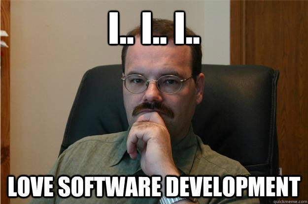

Software engineering is a domain that is way more vast than most of the mainstream professions. When a field of study is that vast and boundless to a certain extent it becomes an art like music or painting. An individual who has a certain level of expertise in such a study becomes an artist.
Are you the artist?
Most of the experienced developers believe they are the masters of this domain, I call them experts but are they really the artists? Now the question is how can you tell the difference between an expert and an artist?
There are no such hardcore criteria to define someone as the master of the art but you can tell if you are transitioning into an artist.
Humble & hungry
After knowing a lot of technologies, concepts, and patterns for solving different problems, you still feel there is so much left to learn. Your skills and level of competence no more boosts your ego. In fact, the more you learn, the more humble you become. You become aware of the vast sea of software engineering about which you have a limited understanding.
Even if the learning is coming from a junior person, you believe if you can extract a few more bits from their system, it would be worth it.
Identify the patterns
With years, you have developed the ability to detect patterns much better than the others. As soon as you encounter a problem, your brain starts breaking it into patterns that you have seen earlier or are aware of. Problem-solving has become your prime skill as far as technology and computer science are concerned. For you, patterns matter more than the tech stack or the programming language or tools.
Learning without expectations
This might sound stupid to some people as every action by most others is taken with some monetary expectations. This is the difference between you (artist) and others. For you, learning about software engineering and technology has become a part of life. While others crib about constantly changing technologies and how they have to fight to stay technically relevant in their job but they no more feel any pressure. In fact, you have trained your brain over the years to stay hungry to learn.

You no more learn technologies or concepts to get one more raise or the next job. You learn it to be more informed, to enhance your craft, and to learn one more way to solve a new problem. You respect your art and understand it’s not only just a means to earn bread & butter but it is your way of contributing to the world.
Not bound by a tech stack
You no more feel restricted by programming languages or tools. You feel confident to acquire any such skill to solve a problem. After breaking the problem into patterns and defining the solution, tech stack and programming language is just a tool for you to solve that problem. For you, understanding matters more than syntax or configurations.
Everything is a trade-off
You understand that the solution to a problem is almost never binary in nature. Every solution has its trade-off in software engineering. You have realized over the years that choices should be made after understanding the trade-offs instead of taking someone’s recommendation. You have realized that requirements define the choices in software design, not the problem itself.
Conclusion
The beauty of a human’s ability is that any work pursued with commitment, love, and passion will become art itself. Software engineering is a study of problem solving and as the problems can be infinite so can the solutions. You can keep exploring the cosmos of software engineering if you are in love with it.
“ Science is what we understand well enough to explain to a computer. Art is everything else we do.”, Donald Knuth
Don’t forget to follow me on Medium for more such content and give a clap if you like it.